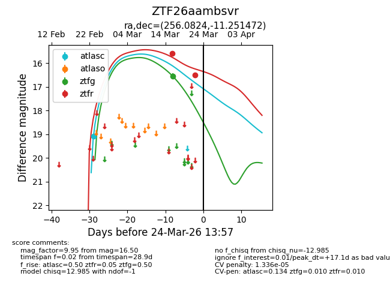
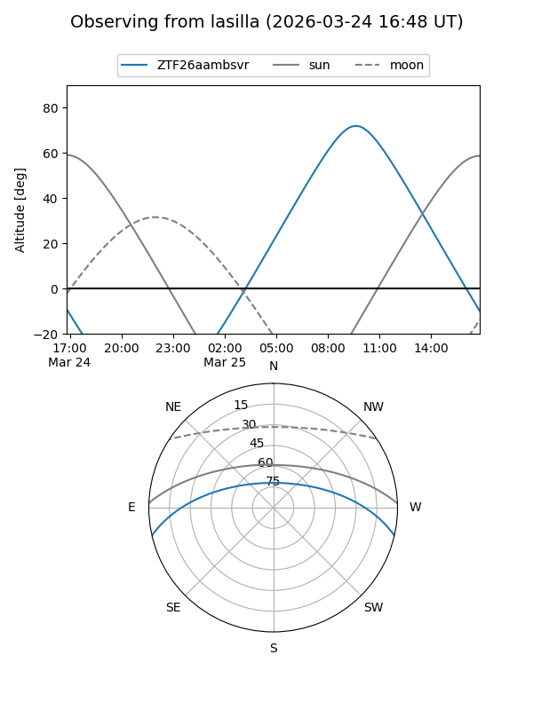
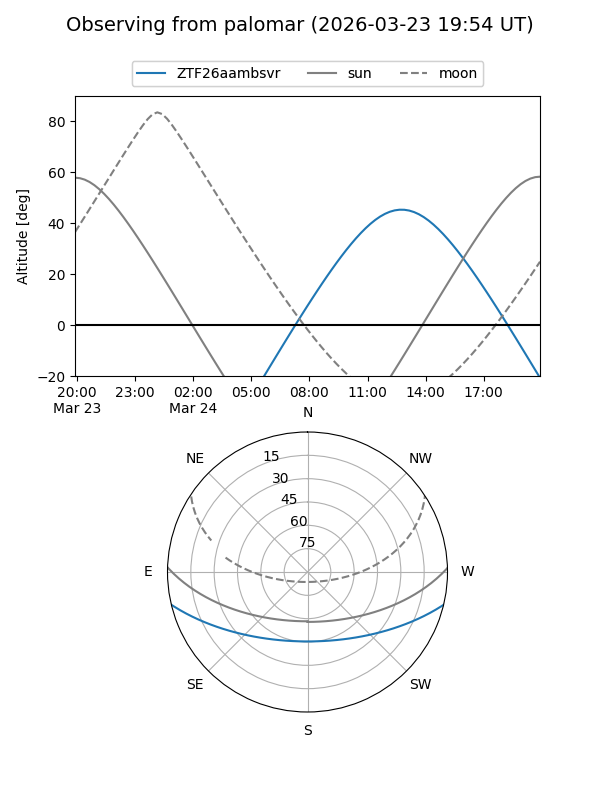
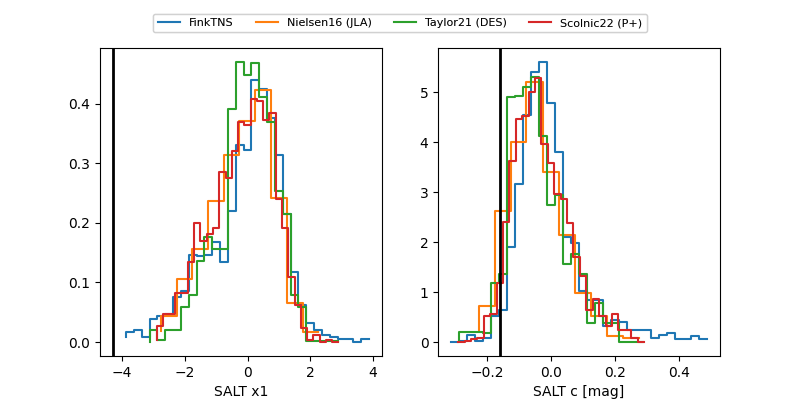

ZTF26aambsvr
Target ZTF26aambsvr at 2026-03-24 14:00
Aliases and brokers:
FINK: link
Lasair: link
ALeRCE: link
alt names
ZTF26aambsvr (ztf,fink_ztf)
Coordinates:
equatorial (ra, dec) = 256.0824,-11.25147
equatorial (HMS+DMS) = 17:04:19.78,-11:15:05.30
galactic (l, b) = (9.7404,+17.71497)
Flags:
likely cv
Photometry:
last atlasc=19.09, ztfg=16.55, ztfr=16.50
1 atlasc, 1 ztfg, 2 ztfr detections
Lightcurve

Visibility


Additional plots
